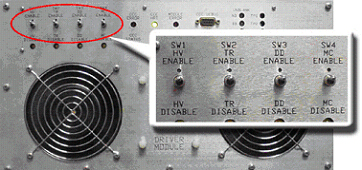

Proprietary to General Electric Company
Direction 5440000, Rev# 5
Signa HDxt Service Methods
Module Version 1.0, Version Date 4/26/07
Proprietary to General Electric Company |
| Required Persons | Preliminary Reqs | Procedure | Finalization |
|---|---|---|---|
| 1 | Not Applicable | 15 mins | 20 mins |
Body Phantom Coil Setup and Test. For an overview of this test refer to 1.5T Pin Diode Test Overview.
| Item | Qty | Effectivity | Part# | Manufacturer | |
|---|---|---|---|---|---|
| NiCl2 TLT Body Sphere Phantom | 1 | - | 46-265635G6 | - | |
| Body Loader | 1 | - | 2135652-2 | - | |
| ||||
| POISON HAZARD! | ||||
| PHANTOM CONTAINS NICKEL, A SUSPECT CARCINOGEN. | ||||
| DO NOT INGEST. DISPOSE OF AS A HAZARDOUS WASTE ACCORDING TO STATE AND FEDERAL REGULATIONS. |
Remove Head Coil if present.
| ||||
| PROPERTY DAMAGE! TO PREVENT COIL AND ASSOCIATED SWITCH DAMAGE, REMOVE ALL PHANTOMS AND HARDWARE (I.E., HEAD COIL, SURFACE COIL...) FROM THE MAGNET BORE. | ||||
Disable the Exciter RF Output, by setting the RF Enable toggle switch (located on the front panel I/O), to the OFF position. (See Illustration 1).
Illustration 1: RF DISABLED FOR SCAN

Run the Noise-Only Test Procedureusing the body coil section, recording the noise value.
Disconnect the following cables:
Disconnect J7 (Body T/R Bias) on the rear panel of the Driver Module.
Disconnect J21 - J25 (various Dynamic Disable Bias cables) on the rear panel of the Driver Module.
Disable TR Fault detection by switching SW2 to TR DISABLE as shown in Illustration 2:
Illustration 2: Driver Module Switches

| NOTE: | Possible Equipment Damage. Do not select [Manual Prescan], [Auto Prescan], or [Scan] after any Bias lines are disconnected with the RF OUT enabled. The RF chain components may be damaged. |
Run the Noise-Only Test Procedure again recording the value found.
Compare the noise value for the bias cables disconnected to the noise value for the bias cables connected.
If there is less than a 0.06 1.5T difference in the noise values, the pin diodes are not leaky. Continue with Finalization, Step 1. If there is more than a difference of 0.06, then a leaky PIN diode is indicated in one of the pin diode circuits.
Reconnect ONLY the Body TR Bias line. After the scan compare the “Body TR Bias line reconnect noise value” with the “noise value of all lines disconnected” as performed earlier in this section. View results and determine next step.
Reconnect ONLY one of the five Dynamic Disable related pin diode circuit Bias cables at a time. Run Noise-Only Test Procedure again noting the noise value. After each scan, disconnect the bias cable and connect another one. View results and determine next step.
If not already done, after all DD related Bias cables have been reconnected one at a time, run the Report tool. For each scan, look for a difference of 0.06 or greater in the noise value between all bias cables disconnected and each of the bias cables reconnected. This indicates the circuit(s) with leaky diode(s).
Re-connect the J7 Body TR Bias cable at the rear of the Driver Module.
Re-connect the 5 Dynamic Disable Bias cables at the rear of the Driver Module (J21 - J25).
Proceed to Finalization, Step 1.
Verify that the system is not in manual prescan or scanning, the scan desktop icon will display the “Idle” message.
Place the “Fault Detection” TR Switch to normal system configuration TR Enable on the Driver Module.
Ensure that all the Dynamic Disable Drive Bias cables (21-J25) are reconnected at the rear of the Driver Module.
Ensure that all the TR Bias cables (J6, J7) are reconnected at the rear of the Driver Module.
Enable the Exciter RF Output, by setting the RF Enable toggle switch (located on the front panel of the Front Plane I/O Board), to the ON position.
Put all covers back on.
Perform one body scan.
Perform One Head scan.